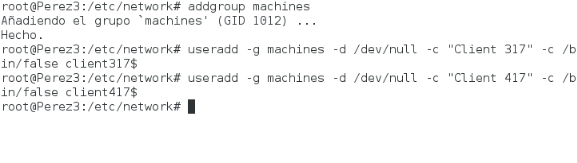
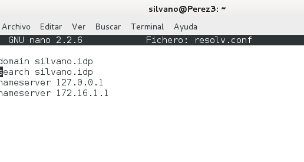
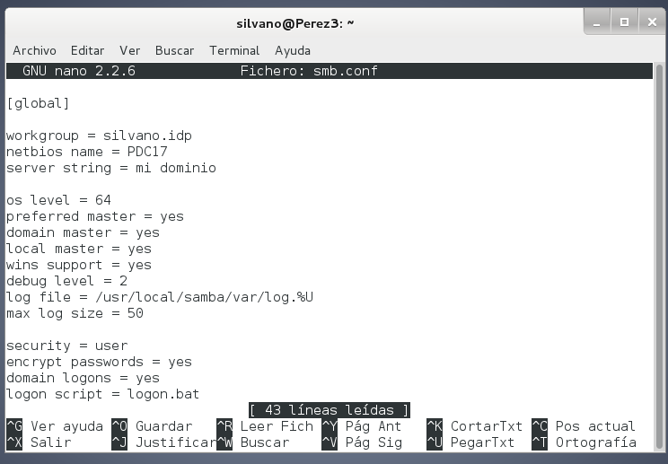
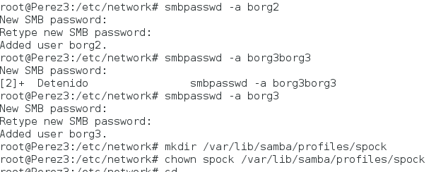
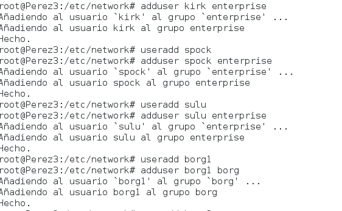
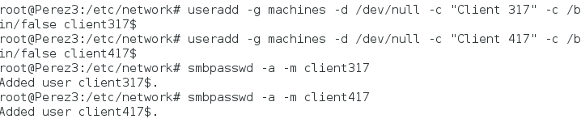
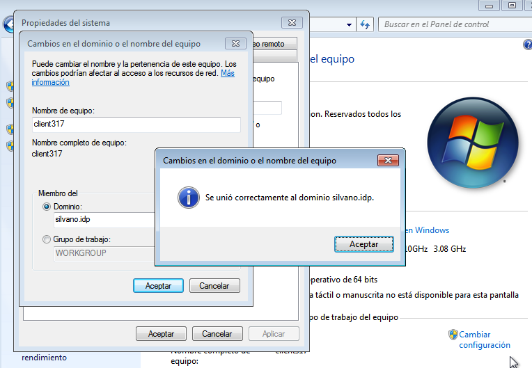

- Módulo: Administración de sistemas operativos
- Título del trabajo PDC
- Componentes del grupo: Silvano Pérez Yanes
- Curso Académico: 2º ASIR
- Fecha de entrega: 18 de marzo de 2015
En esta actividad vamos a instalarun servidor PDC con samba
Creamos los usuarios del PDC y dichos usuarios los metemos en los grupos designados; habrá que crear los ficheros profiles y netlogon
     En este paso conectamos el cliente al dominio del servidor para poder entrar a los usuarios del PDC de linux (En este paso, el cliente no consigue entrar con los usuarios del servidor de linux. En este paso es donde me quede. )
